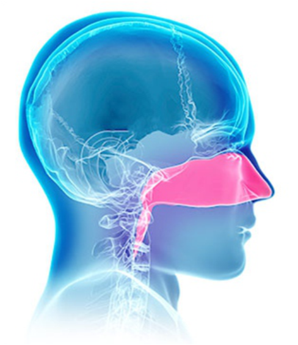

Adjustment of energy levels to control surgical outcomes.
A dry, dark scab or slough formed from coagulated tissue.
System that adjusts device settings based on real-time data to ensure optimal performance.
Variation of electrical frequency to achieve desired tissue effects.
Use of high-frequency electrical current to coagulate tissue.
A pad placed on the patient to safely return electrical current during electrosurgery.
The process of stopping bleeding by clot formation or intervention.
Substances used to promote blood clotting and control bleeding.
Surgical forceps designed to control bleeding by clamping vessels.
Resistance of tissue to electrical current, affecting coagulation efficiency.
Current generated in tissue due to electrical field exposure.
Coagulation performed during surgery to control bleeding.
Electrical output that is separated from the ground to prevent safety issues.
Use of laser light to remove or destroy tissue.
Use of laser light to coagulate or seal tissue.
Heat diffusion from the treatment area to adjacent tissues.
Very fine electrode used for precise electrical stimulation or measurement.
Coagulation of tissue using microwave energy.
Electrosurgical circuit using a single electrode to deliver current to the tissue.